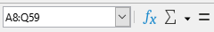
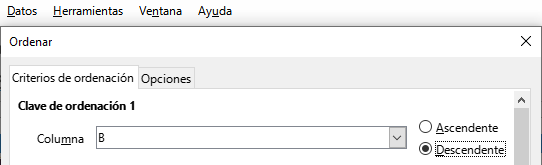
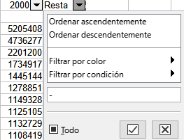
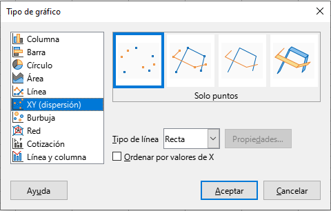

Ordenar datos
Lo primero que de debes saber es que las operaciones siempre se realizan seleccionando todo el rango de datos, en nuestro caso desde la celda 8B a la Q59 esto es lo que se llama un rango de datos y se expresa como 8B:Q59.
 Lo puedes hacer con el ratón o más fácil escribiendo el rango de datos en la casilla correspondiente en la parte superior derecha.
Para ordenar una tabla de datos necesitamos un criterio para ordenarlos, es decir, saber cómo vamos a decidir en qué orden se van a colocar. En nuestro caso el criterio es la población en 2015 empezando por el de mayor población y terminando en la provincia que menos población tenía en 2015.
Tras seleccionar todo el rango de datos y en la barra de menú superior seleccionamos Datos --> Ordenar y como criterio de ordenación tomamos la columna B donde está la población en 2015 y el orden Descendente.

El resultado será la misma tabla pero ahora con las provincias y los datos ordenados de mayor a menor según la población de 2015.
Filtro automático
Filtrar datos es útil para obtener los datos que cumplan alguna condición específica. En este caso queremos saber las provincias que han tenido un crecimiento negativo o decrecimiento, es decir que su población ha disminuido desde 2000 a 2015.
 Para ello es útil conocer la diferencia de población entre estos dos años. para ello en la celda R8 vamos a crear una fórmula que lo calcule automáticamente la resta entre ambas cantidades: = B8 - Q8
Para ello es útil conocer la diferencia de población entre estos dos años. para ello en la celda R8 vamos a crear una fórmula que lo calcule automáticamente la resta entre ambas cantidades: = B8 - Q8
Arrastrando desde el cuadradito de la esquina inferior derecha de dicha casilla copiaremos esta fórmula hasta la casilla R59.
De esta forma obtendremos una columna en la que las cifras en negativo indicarán un descenso de la población, ahora solo queda filtrar los daros para quedarnos sólo con esas filas:

-
-
- Seleccionamos el nuevo rango de datos: A6:R59
- Menú Datos --> Filtro Automático utilizando la primera fila como cabecera de las columnas y obtendremos unas pestañas en cada una de las celdas de la cabecera.
- Clicando en la pestaña de la columna que llamaremos "Resta" podemos seleccionar como aplicar el filtro. En este caso si escribimos un menos "-" en la casilla "Buscar elementos" nos seleccionará las cifras negativas y obtendremos el resultado deseado con las 9 provincias con descenso de la población.
- Copia y pega el resultado en una nueva hoja (Hoja 2).
Utilizando también el filtro automático en la columna de los nombres de provincias podemos seleccionar las 8 provincias andaluzas y realizar el apartado 3 que copiaremos en la Hoja 3
Filtro estándar
Para obtener las provincias que han tenido crecimiento positivo de la población entre 2000 y 2015 y en 2015 tengan más de un millón de habitantes vamos a utilizar el filtro estándar:
- De nuevo en la Hoja1 y deshaciendo los filtros anteriores, seleccionamos de nuevo el rango de datos A8:R59
- Menú Datos --> Más filtros --> Filtro estándar
- En la ventana que se presenta introducimos las condiciones para el filtrado:

El resultado lo copiamos en la Hoja 4
Representación gráfica
Para realizar el gráfico del apartado 5 debes tomas los resultados del apartado 3 con las provincias andaluzas,
- Selecciona las dos filas: Año y la de tu provincia sin incluir la celda de la resta del apartado 2 ( por ejemplo para Málaga). Para seleccionar ambas filas a la vez debes mantener pulsada la tecla CTRL pulsada.
- Para realizar el gráfico utilizaremos el "Asistente para gráficos" que se activa al seleccionar el menú Insertar --> Gráfico
Seleccionaremos:
- Tipo de gráfico --> Columna --> Aspecto 3D Realista
- Intervalo de datos --> Series de datos en filas y Primera fila como etiqueta
- Series de datos --> no cambiamos nada
- Elementos del gráfico --> como en la imagen siguiente:

Línea de tendencia
Para obtener una línea de tendencia, también llamada recta de regresión realizaremos los siguientes pasos:
Seleccionamos los mismos datos que el apartado anterior pero ahora el tipo de gráfico será de dispersión y el resto igual:

Una vez obtenido el gráfico veremos que los puntos están en la parte superior. Para una mejor visualización vamos a variar la escala del eje Y:
- Con doble Clic seleccionamos el gráfico y de nuevo doble Clic sobre alguna cifra a la derecha del eje Y nos aparece una ventana donde podemos variar la estala automática.
- En el mínimo pondremos una cifra redonda menor que el dato más bajo. Ahora vemos mejor la diferencia entre los años.
- Hacemos Clic sobre alguno de los puntos del gráfico y con el botón derecho del ratón en el menú contextual seleccionamos "Insertar línea de tendencia" donde podemos ajustar el tipo de regresión y el aspecto de la línea. En este caso podemos seleccionar la Polinómica y de color rojo y 0,10 cm.
Conclusiones
 Si todo ha ido bien obtendremos un gráfico de este estilo donde podemos extrapolar la evolución de la población de la provincia en años futuros.
Si todo ha ido bien obtendremos un gráfico de este estilo donde podemos extrapolar la evolución de la población de la provincia en años futuros.
Esto nos permite tomar decisiones sobre el crecimiento urbanístico, prever necesidades de suministros de agua y saneamientos, planear infraestructuras de comunicaciones, etc..
Este tipo de información y su análisis es de gran ayuda en muchos ámbitos como el político, económico, sanitario, comercial, etc..